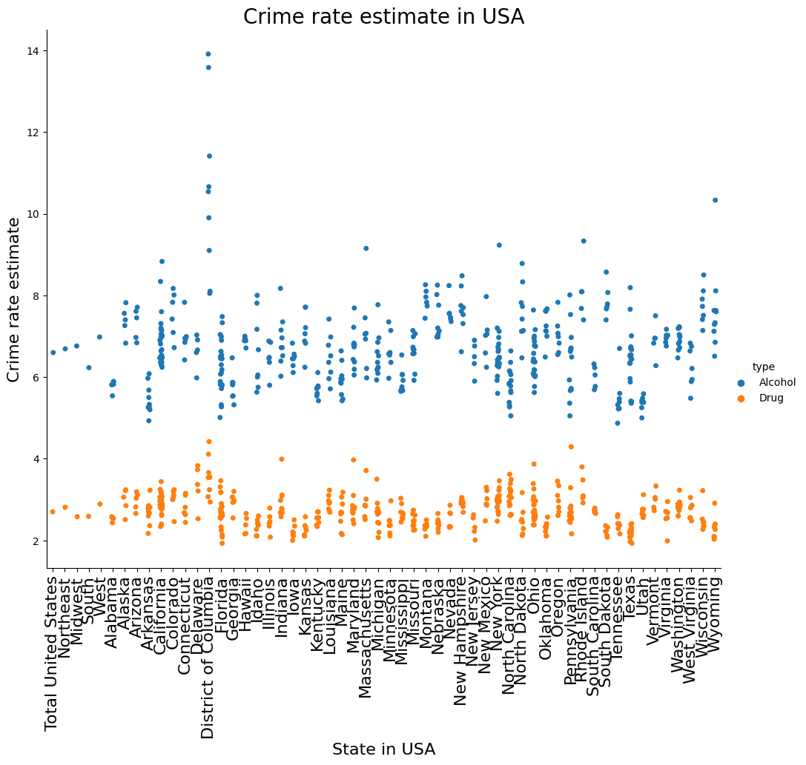

Data exploration is the initial step in data analysis, where users explore a large data set in an unstructured way to uncover initial patterns, characteristics, and points of interest. Data exploration is a crucial part of data science, and it’s important to approach it with curiosity and an open mind. This process isn’t meant to reveal every bit of information a dataset holds, but rather to help create a broad picture of important trends and major points to study in greater detail. Data exploration can be done manually, through visual inspection of data, or by using automated methods such as data mining. Whichever approach you take, the goal is the same: to get a better understanding of your data so that you can make more informed decisions about how to analyze it.
Code
# import packagesfrom wordcloud import WordCloudfrom scipy import integratefrom sklearn.feature_extraction.text import CountVectorizerimport numpy as npimport matplotlib.pyplot as pltimport pandas as pdimport reimport nltkimport stringfrom nltk.sentiment.vader import SentimentIntensityAnalyzer
Tweets Dataset
Go to the Data Gathering tab for more details on how the data being collected.
So from the wold Cloud we can clearly see the most outstanding words are “Weed”,“Marijuana”, and “Cannabis” etc. They are our target words. Also, we can see some words like “Good”, “Bad”, “don’t” etc. to represent people’s views or emotions on Marijuana. So let’s analysis the tone or mood of each tweets.
Explore the sentiment of each tweet
Text Vectorization
Text Vectorization is the process of converting text into numerical representation. Here, we used a tool called CountVectorizer from Python Sklearns library. It can count the frequency of each word and use the frequency as the features.
Remove Stop words and Word Stemming/Lemmatization
Stopwords are the most common words of a language like ‘I’, ‘this’, ‘is’, ‘in’ which do not add much value to the meaning of a document. These values are removed to decrease the dataset size and increase focus on meaningful words.
Stemming is a process that stems or removes last few characters from a word, often leading to incorrect meanings and spelling. Lemmatization considers the context and converts the word to its meaningful base form
Code
# Importing spacyimport spacy# Loading modelnlp = spacy.load('en_core_web_sm',disable=['parser', 'ner'])# Lemmatization with stopwords removaltweet['lemmatized']=tweet['clean_text'].apply(lambda x: ' '.join([token.lemma_ for token inlist(nlp(x)) if (token.is_stop==False)]))
d:\python\envs\ANLY580\lib\site-packages\tqdm\auto.py:22: TqdmWarning: IProgress not found. Please update jupyter and ipywidgets. See https://ipywidgets.readthedocs.io/en/stable/user_install.html
from .autonotebook import tqdm as notebook_tqdm
@BabzOnTheMic Off the weed bro. That’s 4 strai...
weed bro thats straight losses miami pats lon...
weed bro s straight loss miami pat long thre...
...
...
...
...
...
...
...
2495
2495
2022-09-07 21:20:14+00:00
en
I just caught someone smoking their weed pen i...
caught someone smoking weed pen class hahahaha...
catch smoking weed pen class hahahahahahahaha ...
2496
2496
2022-09-07 21:17:48+00:00
en
@AesPolitics And research shows black and brow...
research shows black brown people disproporti...
research show black brown people disproporti...
2497
2497
2022-09-07 21:17:39+00:00
en
Smoke weed “ your not responsible and mentally...
smoke weed responsible mentally sick sober ser...
smoke weed responsible mentally sick sober bou...
2498
2498
2022-09-07 21:09:58+00:00
en
People who call weed, cannabis. https://t.co/m...
people call weed cannabis
people weed cannabis
2499
2499
2022-09-07 21:09:43+00:00
en
You were coughing when you hit my weed, but I’...
coughing hit weed ive never seen feel free
cough hit weed ve see feel free
2500 rows × 6 columns
We can clearly see that some stop words in the original text has been removed and some words has been changed. For example, the word ‘called’ in second rows of the clean_text has been changed as ‘call’. By doing Lemmatization, we can improve the accuracy of the word counts therefore the accuracy of the model will be improved as well.
Count Vectorizer
CountVectorizer is a great tool provided by the scikit-learn library in Python. It is used to transform a given text into a vector on the basis of the frequency (count) of each word that occurs in the entire text. This is helpful when we have multiple such texts, and we wish to convert each word in each text into vectors (for using in further text analysis). CountVectorizer essentially builds a vocabulary from all the available documents and assigns a unique integer ID to each word. The algorithm then counts the number of times each word appears in each document, and finally assigns a normalized tf-idf score to each word. CountVectorizer is therefore a powerful tool that can be used to convert texts into vectors, which can then be used in various downstream tasks such as machine learning or text analysis.
So we successfully transfer 2500 tweets into words matrix. Each row represents each tweet since we got 2500 tweet there are 2500 rows as expected. Each columns represents each word among 2500 tweets, and each number in the cells present the word count in corresponding tweet, For example, 0 is in the first row and first column which shows that word ‘aahn’ is not showing up in the first tweet.
Sentiment Score
VADER’s SentimentIntensityAnalyzer() takes in a string and returns a dictionary of scores in each of four categories: negative, neutral and positive. Here I am going to use the function called “SentimentIntensityAnalyzer” to analysis the tone of each tweets. For each tweet, we’ll get four values, corresponding to “negative”, “neutral”, “positive” and “compound”. The first three values will be in the range 0 to 1, the last value representing the combination of the first three values will be in the range -1 to 1. If the tone of this tweet represents a like, the compound value will be close to 1, and if the tone of this tweet is a hate, it will be close to -1.
Code
# calculate the sore of sentimentdef score_vibe(text): score=[] sia = SentimentIntensityAnalyzer()for i in text: score.append(sia.polarity_scores(i))return scorescore=score_vibe(content)score_df = pd.DataFrame.from_records(score)score_df
neg
neu
pos
compound
0
0.563
0.392
0.045
-0.9531
1
0.048
0.578
0.374
0.9184
2
0.225
0.775
0.000
-0.4404
3
0.000
1.000
0.000
0.0000
4
0.381
0.500
0.119
-0.6369
...
...
...
...
...
2495
0.000
0.769
0.231
0.4019
2496
0.000
1.000
0.000
0.0000
2497
0.366
0.568
0.065
-0.8625
2498
0.000
1.000
0.000
0.0000
2499
0.278
0.722
0.000
-0.4023
2500 rows × 4 columns
This is the sentiment score for each tweet.
Code
score_df.describe()
neg
neu
pos
compound
count
2500.000000
2500.000000
2500.000000
2500.000000
mean
0.098713
0.746492
0.154802
0.093621
std
0.143998
0.212583
0.176645
0.435726
min
0.000000
0.000000
0.000000
-0.974400
25%
0.000000
0.583000
0.000000
-0.090050
50%
0.000000
0.738000
0.110000
0.000000
75%
0.182000
1.000000
0.278000
0.440400
max
0.912000
1.000000
1.000000
0.976400
Some statistics for the 2500 tweets sentiment scores. As we can see the values from the table, “neutral” has hightest mean comparing the “negative” and “positive” score, which means majority of people have neutral feeling about it Take look at “compound” values, its mean are 0.093621 which close to 0 so we can confirm that most people don’t care about the weed.
Code
import seaborn as snsf = plt.figure()f.set_figwidth(10)f.set_figheight(6)plt.title('Distribution of the Sentiment Scores',fontsize=20)plt.xlabel('Score of sentiment',fontsize=16)plt.ylabel('Counts',fontsize=16)plt.hist(score_df[['neg','neu','pos']], color=['r','b','g'], alpha=0.5)plt.legend(['Neg','Neu','Pos'])plt.show()
The histogram provides us more straight forward information. From this histogram, we can see that the orange category occupies a higher score, which means that more people are neutral about cannabis. It actually match the our descriptive statistical table of tone score.
Code
#label the dataset with tonetweet['tone']=score_df['compound']
Open FDA Criminal Rate Data
Now let’s analysis numerical data. The plot shown below is the small area estimated crime rate. Based on two different types Alcohol and Drug, there are two different color of point.
Code
import pandas as pdimport matplotlib.pyplot as pltimport seaborn as snsalcohol_drug_df=pd.read_csv("alcohol_drug_df.csv")
Code
ax=sns.catplot(data=alcohol_drug_df,x='State',y='small_area_estimate',hue="type",height =8, aspect =1.25)ax.set_xticklabels(rotation=90,fontsize=16)ax.set_ylabels("Crime rate estimate",fontsize=16)ax.set_xlabels("State in USA",fontsize=16)plt.title("Crime rate estimate in USA",fontsize=20)plt.show()

From the graph, we can see almost all the blue points are on the top of orange points, which means the crime rate caused by alcohol is much higher than marijuana. Here is the descriptive statistics of crime rate table.